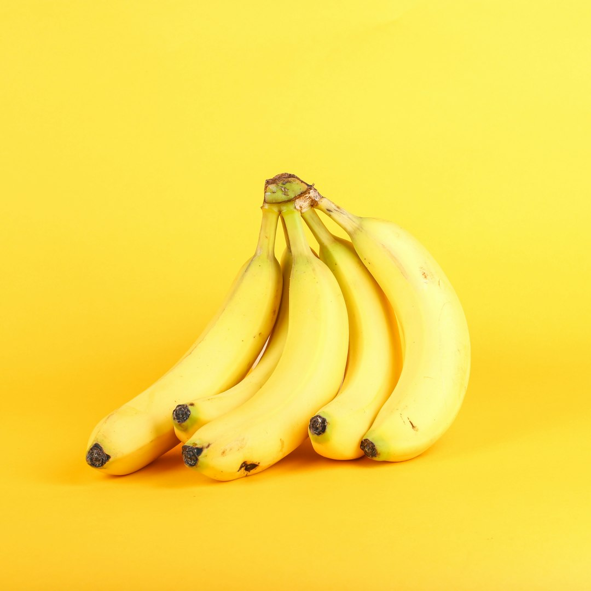

Entry · Sunday, May 3, 2026

Plate N. — An assemblage of Cavendish bananas contemplating their place in the sun, as captured by Giorgio Trovato.
Photo by Giorgio Trovato on Unsplash
Banana, Cavendish
/ka-VEN-dish/ n.- 1. A cultivar of banana, predominantly yellow and curved, known for its substantial girth; esp. one basking in the glow of a fruit bowl under diffused light.
- 2. colloq. Any banana that commands attention with its full-bodied presence and unapologetic curvature.
In a sentence —
"The Cavendish banana on display was so thiccc it practically overshadowed the apples, asserting its dominance in the fruit hierarchy."
Etymology —
Named after William Cavendish, 6th Duke of Devonshire, who sponsored the cultivation of this banana variety in the 19th century. The Cavendish knew how to peel back expectations.